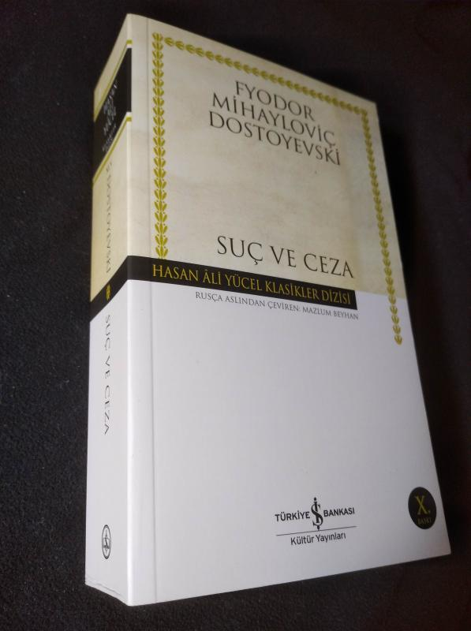
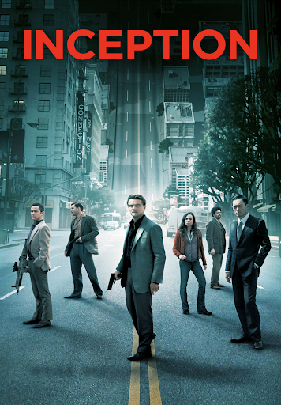

Suç ve Ceza
Yazar : Fyodor Dostoyevski
Tür : Roman / Rus Klasikleri
Puan : ⭐️⭐️⭐️⭐️
Yıl : 1866
İnceleme :
Suç ve Ceza, Fyodor Dostoyevski'nin en ünlü eseri olarak kabul edilen bir roman.
Roman, 19. yüzyılın Rusya'sında yaşayan bir adamın hayatını anlatıyor. Roman, Suç ve Ceza adlı bir eserdir.
Roman, 19. yüzyılın Rusya'sında yaşayan bir adamın hayatını anlatıyor.
Roman, 19. yüzyılın Rusya'sında yaşayan bir adamın hayatını anlatıyor.
Yorumlar :
Bu kitabı okurken kendimi durduramadım. Kesinlikle tavsiye ederim
Yazar : Fyodor Dostoyevski
Tür : Roman / Rus Klasikleri
Puan : ⭐️⭐️⭐️⭐️
Yıl : 1866
İnceleme :
Suç ve Ceza, Fyodor Dostoyevski'nin en ünlü eseri olarak kabul edilen bir roman. Roman, 19. yüzyılın Rusya'sında yaşayan bir adamın hayatını anlatıyor. Roman, Suç ve Ceza adlı bir eserdir. Roman, 19. yüzyılın Rusya'sında yaşayan bir adamın hayatını anlatıyor. Roman, 19. yüzyılın Rusya'sında yaşayan bir adamın hayatını anlatıyor.
Yorumlar :
Bu kitabı okurken kendimi durduramadım. Kesinlikle tavsiye ederim

Inception
Yönetmen : Christopher Nolan
Tür : Bilim Kurgu / Aksiyon
Puan : ⭐️⭐️⭐️⭐️⭐️
Yıl : 2010
İnceleme :
Inception, Christopher Nolan'ın en ünlü eseri olarak kabul edilen bir film.
Film, 2010 yılında çıkan bir bilim kurgu/aksiyon filmidir. Film, Inception adlı bir filmdir.
Yorumlar :
Bu filmi izlerken kendimi durduramadım. Kesinlikle tavsiye ederim
Yönetmen : Christopher Nolan
Tür : Bilim Kurgu / Aksiyon
Puan : ⭐️⭐️⭐️⭐️⭐️
Yıl : 2010
İnceleme :
Inception, Christopher Nolan'ın en ünlü eseri olarak kabul edilen bir film. Film, 2010 yılında çıkan bir bilim kurgu/aksiyon filmidir. Film, Inception adlı bir filmdir.
Yorumlar :
Bu filmi izlerken kendimi durduramadım. Kesinlikle tavsiye ederim